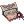
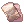

Banquet for Heroes
Jump to navigation
Jump to search
Banquet for Heroes
Learning About the Families
| Requirements | |
|---|---|
| Base Level: | 100 |
| Starting Point: | |
| Prerequisite(s): | New World Access Quest |
| Rewards | |
| Experience: | 7,500,000 (Base) and 7,500,000 (Job) |
| Items: | 10  Honor Token Honor Token
|
- Speak with the Royal Errand Boy in Prontera to start the quest. He will give you a  Banquet Invitation.
- Go in the Prontera Castle (@go woe, then walk north). Upon entering the castle, Chamberlain Bell will ask to follow him.
- Walk towards the left wing and enter the portal. Keep going forward to enter your room and Chamberlain Bell will be waiting for you inside.
- Speak with Chamberlain Bell, he asks you meet with all the members of the other families. You can always come back to him to know which family you haven't talked to yet.
- The Heine (left wing, bottom room):
Walk near the table and a cutscene will start. Speak with Kronecker G. Heine afterwards. - The Nerius (left wing, middle room):
A cutscene will trigger when you leave the Heine room. Enter the Nerius room and speak with Spica Nerius. - The Walthers (left wing, top room):
Speak with Ian Walther and then Isenhonor Walther.
You can now start The Walthers storyline. - The Wigners (right wing, bottom room):
Speak with Levuiere Wigner and then Jurgen Wigner.
You can now start The Wigners storyline. - The Richards (right wing, middle room):
Speak with Butler for the Richards and then Po Richard right next to him.
You can speak with Po Richard again to unlock the The Royal Richard daily quest. - The Geoborgs (right wing, middle room):
Enter the Geoborgs's room and a scene will trigger. Speak with the Queen and select Ask about the Geoborg family.
You can now start The Geoborgs storyline. - The Roegenburg (right wing, top room):
Speak with Maximilian Roegenburg and then Wolf Roegenburg.
You can now start The Roegenburgs storyline.
- The Heine (left wing, bottom room):
- Once you've visited all the families, come back to your room and talk with Chamberlain Bell. He will reward you with 10 Honor Token and some experience.
- You can continue the quest with the Ritual of Blessing.
Ritual of Blessing
| Requirements | |
|---|---|
| Base Level: | 100 |
| Starting Point: | Chamberlain Bell |
| Prerequisite(s): | Learning About the Families |
| Rewards | |
| Experience: | 10,000,000 (Base) and 10,000,000 (Job) |
| Items: | 20 Honor Token
|
- Bell has asked you to participate in the event and meet with Spica in the Banquet Hall. On your way there , you will trigger a cutscene.
- Go find Spica Nerius in the Banquet Hall and she'll ask you to follow Nyhill since he was acting strange.
- Leave the Banquet Hall and on your way back to your room, you will trigger another cutscene.
- Go in the room right below the cutscene to meet with Skia Nerius and Nyhill.
- Speak with Nyhill in the room. You'll have to go back to your room and speak with Chamberlain Bell afterwards.
- Talk with Chamberlain Bell and Nillem will appear next to you. After the cutscene, you'll be warped to the Past Memories of the Royal Family.
- While in a party, speak with Mage Nillem and choose Generate instance to attend the Ritual of Blessing. Then talk to the Ritual of Blessing warper.
- Speak with Skia at the entrance to start the ritual.
- Take your position in the empty space, on the right side.
- Enjoy the cutscene...! Walk up a bit to watch the important part.
- The Ritual of Blessing is under attack by intruders, fight them off.
- Speak with Kronecker G. Heine to finish up the quest and then leave the room by walking down towards the exit.
- Back in the Past Memories of the Royal Family, you'll see all the family members waiting for you.
- Speak with Ian Walther to know more about what's going on.
- After the members leave, talk to Mage Nillem. He wants you to take a look at the royal document Kronecker was looking at.
- Speak with Lindt the Librarian and then talk with Mage Nillem again.
- Leave the Past Memories of the Royal Family by speaking with the Guardian Knight on the left side. Select Get out now and you'll be warped into the prison.
You need to exit the map via this Guardian Knight and Overwatch Terketh in order to proceed the quest, otherwise, talking to Chamberlain Bell will make Mage Nillem warp you back to the Past Memories of the Royal Family Room - Talk to Overwatcher Terketh to get you out of the cell.
You can talk with him again to be warped back inside the Past Memories of the Royal Family at any moment. - Go back to Chamberlain Bell in your room and tell him what happened.
- You'll be invited to the Nerius family, go to their room and speak with 'Spica Nerius'.
- Go visit the Heine in the room below. Speak to Kronocker G. Heine and listen to what he has to say. You'll be rewarded with 20 Honor Token and some experience.
- You can continue the quest with Room of Consciousness.
Room of Consciousness
| Requirements | |
|---|---|
| Base Level: | 100 |
| Starting Point: | Chamberlain Bell |
| Prerequisite(s): | Ritual of Blessing |
| Rewards | |
| Experience: | 50,000,000 (Base) and 50,000,000 (Job) |
| Items: | 30 Honor Token
|
- Summon the Court Mage Nillem by talking with Chamberlain Bell back in your room.
- Speak with the mage and he will warp you in the Past Memories of the Royal Family once more.
- Talk to the mage again and this time, he will open a Dimension Warper that you have to use to go in the past.
- Talk to Nillem and he will connect you to the Room of Consciousness. Speak to the Swaying Space when you're ready.
- You will be warped into the Room of Consciousness. The mechanics of this instance are explained in its own page.
- Once you've completed the instance, speak with Nillem again. He'll allow you to move to the Prontera of the past!
You have gained access to the Invaded Prontera. Simply walk to the portal at the end of the corridor. - Speak with Nillem in the Invaded Prontera and he will warp you back to the current Past Memories of the Royal Family.
- Speak with Nillem in the room and Kronecker G. Heine will appear on his left side.
- Speak with Kronecker G. Heine and tell him what you've seen. You will be rewarded with 30 Honor Token and some experience.
- You now have to wait for Nillem to recover before he can connect to the Room of Consciousness once more.
You have unlocked the Room of Consciousness daily quest.
Invaded Prontera
- To reach the Invaded Prontera from the past, go in the Prontera Castle inside your room.
- Speak with Chamberlain Bell and summon Nillem. He will warp you to the Past Memories of the Royal Family.
- Speak with Nillem again and he will make a Dimension Warper appear. Use it to go back in time.
- Head towards the left corridor and use the portal below and you'll be warped to the Invaded Prontera map.
Alternatively, you may use the Warper > Instances > Sky Fortress
The Royal Families
The Roegenburgs
| Requirements | |
|---|---|
| Base Level: | 100 |
| Starting Point: | |
| Items: | 12  Soft Silk Soft Silk
|
| Prerequisite(s): | Learning About the Families, step 4 |
| Rewards | |
| Experience: | 50,000,000 (Base) and 50,000,000 (Job) |
| Items: | Prontera Badge 10 Honor Token
|
- After speaking with Wolf Roegenburg , go to the Wigner's room.
- Speak with Isaac Wigner (he will appear once you walk close to Jurgen). He will give you a Sample of New Business Item.
- Go back to the Roegenburg's room and this time Myer Roegenburg will appear.
- Speak with Wolf Roegenburg and give him the password "1618". He will then ask you find more about the rumors in Prontera.
- Find a group of kids in Prontera near and speak with any of them. They will give you the following request:
- 12 Soft Silk
- Hunt 33 Majoruros
- Bring the Rune-Midgartz History Book
- 12
- The Rune-Midgartz History Book is obtained from the Uptight Librarian in the Library (Banquet Hall > Bottom right room).
- Speak with the Uptight Librarian and answer her questions, the answers are:
- In memory of defeating Morocc.
- 7 royal families attended it.
- Geoborg and Walther.
- You mean the Geoborgs?
- Return to the kids once you've completed their request.
- Speak with Wolf Roegenburg in his room and he will give you a
 Top Secret Document.
Top Secret Document. - Go back to the Wigner's room and deliver the document to Isaac Wigner (he will appear once you walk close to Jurgen).
- Go back to Wolf Roegenburg and he will give you a Prontera Badge.
- Find Helmut Roegenburg at the Border Post and speak with him.
- Go back to the Roegenburg's room and speak with Maximilian Roegenburg.
- Talk to the kids in Prontera again (bottom right).
- Go back to the Roegenburg's room and speak with Maximilian Roegenburg. He will reward you with 10 Honor Token with some experience.
You have now unlocked the The Dress Dilemma daily quest.
The Wigners
| Requirements | |
|---|---|
| Base Level: | 100 |
| Starting Point: | |
| Prerequisite(s): | Learning About the Families, step 4 |
| Rewards | |
| Experience: | 25,000,000 (Base) and 25,000,000 (Job) |
| Items: | 10 Honor Token
|
- After speaking with Jurgen Winger , talk to Levuiere Wigner.
- Speak with Katrin Wigner, she's worried and tells you that her jewelry box is missing.
- Speak with the Maid in the Prontera Castle's kitchen (top left from the Banquet Hall). She'll give you 3 Poring Loofah and then ask you to clean up the kitchen in exchange for some information.
- Go near the Dark and Damp Wall ( and you will need the following items:
- Go near the Sticky Wall and you will need the following items:
- Go near the Pitch-black Floor and you will need the following items:
- Return to the Maid and she'll imply it was the Furniture Deliveryman who took the jewelry box.
- Speak with the Furniture Deliveryman in Prontera . He says he's hungry and will ask you to bring 3  Beef Head before he can tell you more.
- Once you've gathered enough, talk to the Furniture Deliveryman again. He tells you he doesn't know anything about it.
- Go back to the Wigner room and speak to Jurgen Wigner. There was a misunderstanding and you learn that Isaac was the one who took the jewelry box to hide it.
- Katrin is still upset and to make up for it, you'll be asked to bring the following items for her:
 Witherless Rose
Witherless Rose- 10 Sea Stone
The Sea Stones are obtained from killing Medusa in the Comodo dungeon.
- Return to Jurgen and he'll reward you with 10 Honor Token and some experience.
You have unlocked the The Maid and Jurgen quest.


The Maid and Jurgen
| Requirements | |
|---|---|
| Base Level: | 100 |
| Starting Point: | |
| Prerequisite(s): | The Wigners |
| Rewards | |
| Experience: | 25,000,000 (Base) and 25,000,000 (Job) |
| Items: | 4 Honor Token
|
- Speak with Jurgen Winger again and help him with the Maid situation.
- Go back to the kitchen and speak with the Maid .
- Go back to Jurgen and tell him she rejected his offer. He'll ask you to give the following items to the Maid:
- Witherless Rose
- 15 Sea Stone
The Sea Stones are obtained from killing Medusa in the Comodo dungeon.
- Return to the Maid with the items, and then go back to Jurgen.
- Jurgen will reward you with 4 Honor Token and some experience.
You have now unlocked The Maid daily quest.
The Geoborgs
| Requirements | |
|---|---|
| Base Level: | 100 |
| Starting Point: | |
| Prerequisite(s): | Learning About the Families, step 4 |
| Rewards | |
| Experience: | 17,500,000 (Base) and 17,500,000 (Job) |
| Items: | 10 Honor Token
|
- After speaking with the Queen , talk to Martin (the Bodyguard at the bottom). He'll ask you to meet the Queen's sister.
- Speak with Scarlet Jaha in the Banquet Hall .
- She's interrupted by Lidion Geoborg, speak with him (he's to the right side Jaha).
- Speak with Scarlet Jaha again, she wants you to find prince Ernst.
- You'll have to overhear people's conversations to continue this quest. Go to the following locations in the Banquet Hall:

- Return to Scarlet Jaha and she'll reward you with 10 Honor Token with some experience.
The Walthers
| Requirements | |
|---|---|
| Base Level: | 100 |
| Starting Point: | alberta 187/147 |
| Items: |  1 Green Salad 1 Green Salad
|
| Prerequisite(s): | Learning About the Families, step 4 |
| Rewards | |
| Experience: | 25,000,000 (Base) and 12,500,000 (Job) |
| Items: | 10 Honor Tokens
|
- After speaking with Isenhonor Walther, talk to the Guardian Knight in Alberta .
- Speak with Bigfoot in the Prontera Castle's prison . He'll ask for a Green Salad and 3
 Spicy Fried Bao.(Both are level 5 foods)
Spicy Fried Bao.(Both are level 5 foods)
- Head to Veins and speak to K . You will receive a Seal Stamped Letter.
- Finally, return to Prontera castle and deliver the letter to Isenhonor Walther . You will receive 10 Honor Tokens.
Restricted Sector
| Requirements | |
|---|---|
| Base Level: | 140 |
| Starting Point: | |
| Prerequisite(s): | Learning About the Families, step 1 |
| Rewards | |
| Experience: | 52,500,000 (Base) and 52,500,000 (Job) |
| Items: | 2 Honor Token
|
- Speak with Ellond Lawrence (in the Underground Prison, and he'll tell you the prison has been swarming with monsters.
- Talk to him again and he'll ask you to investigate each sector of the Underground Dungeon.
- Speak with the prisoners at the following locations:
- Sector A:
- Sector B:
- Sector C:
- Sector D:
- Sector E:
- Sector F:
- Sector G:
- Sector H:
- Return to Ellond Lawrence to get your reward.
The Royal Head Chef
| Requirements | |
|---|---|
| Base Level: | 100 |
| Starting Point: | |
| Prerequisite(s): | Learning About the Families, step 4 |
| Rewards | |
| Experience: | 35,000,000 (Base) and 17,500,000 (Job) |
| Items: | 10 Honor Token
|
- Speak (or just walk near) to the Royal Chef right in front of the Banquet Hall. He tells you the Royal Head Chef has been looking for you.
- Meet with the Royal Head Chef in the Prontera Castle's kitchen . She ran out of sauce and needs your help to prepare some more.
- Go speak with the Royal Sauce Master and follow his instructions. You can follow The Perfect Sauce guide for this part.
- Return to the Royal Head Chef with the sauce and you can now start cooking the meal!
- Get in line next to the other chefs (the empty spot in front of the Royal Head Chef).
- She asks you to bring the Grilled Griffon to the dining room, to the south west of the banquet hall .
- After serving the Grilled Griffon, Tamarin will want to speak with you.
- Talk to Tamarin (near the table upwards, and he'll tell you he's currently helping the Royal Head Chef as well.
- Go speak with Dew Rianne in the Banquet Hall and tell him Tamarin won't make it to the Banquet.
- Speak with Magi right next to Dew.
- Speak with Mark Ishar , he's upstairs on the left.
- Speak with Alice right next to Mark.
- Return to Tamarin and he will ask you to collect 15
 High-Class Dish. These are obtained from killing the Plates in the dining room.
High-Class Dish. These are obtained from killing the Plates in the dining room. - Once you've collected enough, talk with the Dishwasher in the kitchen, behind the Royal Head Chef.
- Speak with the Royal Head Chef and you will be rewarded with 10 Honor Token and some experience.
You have unlocked the Royal Head Chef dailies.

Cards
The following cards are dropped by mobs that spawn in Prontera Underground Prison and Invaded Prontera. You can access Prontera Underground Prison after completing Restricted Sector quest, and Invaded Prontera can be accessed after completing Room of Consciousness quest.
| Card | Type | Description |
|---|---|---|
| Armor Card | ATK +30.
Drains 5 SP when using physical attacks. | |
| Accessory Card | ATK +1%. | |
| Accessory Card | MATK +1%. | |
| Garment Card | HP and SP Recovery -100%.
Restores 50 HP and 5 SP to the user when killing a monster with melee attacks. Drains 1000 HP and 100 SP when unequipped. | |
| Shield Card | SP Recovery -100%.
Restores 1 SP to the user when receiving physical attacks. |
Banquet for Heroes Daily Quests
Main article: Banquet for Heroes Daily Quests
Honor Tokens
Main article: Honor Token
Vicious Weapons
Main article: Vicious Weapons